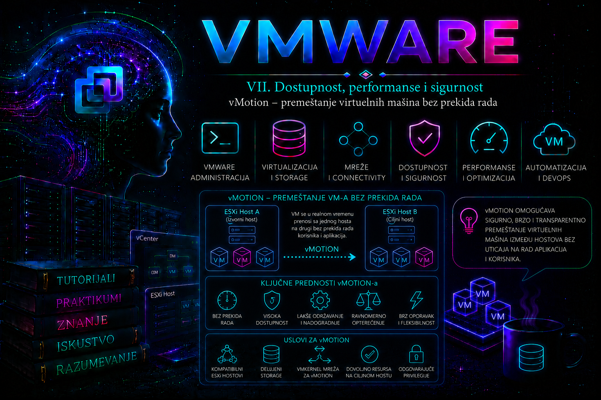

VMware

NAPREDNI TUTORIJAL
vMotion predstavlja jednu od najvažnijih tehnologija VMware platforme jer omogućava migraciju pokrenute virtuelne mašine sa jednog ESXi hosta na drugi bez prekida rada operativnog sistema i aplikacija. Upravo ova mogućnost omogućila je da održavanje fizičke infrastrukture više ne zahteva planirane prekide rada poslovnih servisa.
U modernim data centrima vMotion nije izolovana funkcija već osnovni građevinski element brojnih drugih VMware tehnologija. Distributed Resource Scheduler (DRS) koristi vMotion za automatsko balansiranje opterećenja klastera. Maintenance Mode koristi vMotion kako bi ispraznio host pre planiranog održavanja. Proactive DRS koristi ga za preventivno premeštanje VM-ova sa hosta koji pokazuje hardverske probleme. VMware Lifecycle Manager koristi ga tokom automatizovanog ažuriranja hostova, dok mnoge Disaster Recovery procedure koriste Live Migration kao deo planiranih operacija.
Zbog toga administrator ne sme posmatrati vMotion kao "opciju za prebacivanje VM-a", već kao servis od kojeg zavisi gotovo cela automatizacija VMware infrastrukture.
Šta se zapravo dešava tokom vMotion migracije
Najčešća zabluda je da se kompletna virtuelna mašina kopira na drugi host i zatim pokrene. To nije način rada vMotion tehnologije.
Diskovi ostaju na zajedničkom storage-u (ili na storage-u koji je dostupan oba hosta), dok se između hostova prenosi:
- stanje radne memorije (RAM);
- CPU stanje (registri procesora);
- stanje virtuelnih uređaja;
- aktivne mrežne konekcije;
- stanje virtuelnog BIOS/EFI okruženja;
- interna VMware metadata potrebna za nastavak izvršavanja.
Proces se odvija kroz nekoliko faza.
1. Validacija
vCenter prvo proverava da li postoje svi uslovi za migraciju.
Obuhvata proveru:
- kompatibilnosti procesora;
- dostupnosti memorije;
- pristupa datastore-u;
- VMkernel vMotion mreže;
- licence;
- stanja hostova;
- kompatibilnosti virtuelnog hardvera.
Tek nakon uspešne validacije migracija može početi.
2. Pre-copy faza
Ovo je najduža faza migracije.
RAM virtuelne mašine se kopira sa izvornog hosta na odredišni host dok VM normalno nastavlja da radi.
Pošto VM i dalje izvršava aplikacije, deo memorijskih stranica se u međuvremenu menja.
VMkernel vodi evidenciju tzv. dirty pages.
Nakon prve kopije prenose se samo izmenjene stranice.
Zatim se prenose nove izmenjene stranice.
Proces se ponavlja više puta.
Svakim ciklusom količina izmenjenih stranica postaje sve manja.
Cilj je da na kraju ostane veoma mali broj stranica koje treba preneti tokom kratke pauze.
3. Stun faza
Ovo je jedina faza tokom koje VM privremeno prestaje sa izvršavanjem.
Cilj je da ova pauza bude veoma kratka i za mnoge workload-e meri se desetinama ili stotinama milisekundi, ali to nije bezuslovna garancija. Stvarno vreme zavisi od veličine i stope promene memorije, raspoložive propusnosti i latencije, opterećenja hostova, virtuelnih uređaja i mogućnosti aplikacije da podnese kratku pauzu. Zato se za latency-sensitive sisteme prihvatljiv zastoj definiše unapred i meri iz aplikacije i logova.
Tokom ove faze prenose se:
- preostale dirty pages;
- CPU registri;
- prekidi;
- stanje uređaja;
- interna VMkernel struktura.
Kada je sve preneto, VM nastavlja rad na novom hostu.
Operativni sistem gosta nije svestan da je promenio fizički server.
4. Aktivacija na novom hostu
Novi ESXi host preuzima izvršavanje VM-a.
MAC adresa ostaje ista.
IP adresa ostaje ista.
TCP sesije ostaju aktivne.
Otvorene baze podataka nastavljaju rad.
Korisnici uglavnom ne primećuju migraciju.
Zašto mrežne konekcije ostaju aktivne
Jedno od najvažnijih pitanja jeste kako TCP konekcije preživljavaju migraciju.
Razlog je što:
- VM zadržava istu MAC adresu;
- isti IP ostaje aktivan;
- virtuelna mrežna kartica nastavlja sa identičnim stanjem;
- ESXi odmah šalje Gratuitous ARP (IPv4) ili Neighbor Advertisement (IPv6), čime fizički switch ažurira CAM tabelu.
Na taj način mrežni saobraćaj veoma brzo počinje da stiže na novi host.
Komponente koje učestvuju u migraciji
- vCenter Server koordinira ceo proces.
- Source ESXi host prenosi stanje VM-a.
- Destination ESXi host prima stanje i pokreće izvršavanje.
- VMkernel vMotion interfejs prenosi memoriju.
- Storage sloj obezbeđuje pristup postojećim VMDK fajlovima kod compute-only migracije ili učestvuje u kopiranju diskova kod kombinovane compute i storage migracije.
- vSphere Client ili API pokreću migraciju.
Sam ESXi izvršava migraciju, dok vCenter služi kao orkestrator.
Vrste VMware migracija
| Tip migracije | Šta se premešta | Prekid rada |
|---|---|---|
| vMotion | Compute | Ne |
| Storage vMotion | Diskovi | Ne |
| Enhanced vMotion | Compute + Storage | Ne |
| Cold Migration | Sve | VM mora biti ugašen |
Administratori često mešaju običan vMotion sa Storage vMotion tehnologijom.
Klasični vMotion ne premešta VMDK fajlove.
Storage vMotion ne menja host već datastore.
Kombinovana migracija istovremeno menja i host i storage.
Preduslovi za uspešan vMotion
Preduslovi zavise od verzije vSphere okruženja, ali u tipičnom enterprise klasteru potrebno je:
- upravljanje preko vCenter Server-a;
- ESXi hostovi koji podržavaju vMotion;
- VMkernel adapter sa uključenom vMotion uslugom;
- IP konektivnost između VMkernel adaptera;
- dovoljna mrežna propusnost;
- kompatibilni procesori ili uključen EVC;
- datastore dostupan odredišnom hostu za klasičnu compute-only migraciju, odnosno odgovarajući izvorni i odredišni storage za podržanu kombinovanu migraciju bez zajedničkog datastore-a;
- odredišna VM mreža sa stvarno ekvivalentnim VLAN-om, politikama i fizičkom povezivošću; identičan naziv port grupe nije dovoljan dokaz;
- dovoljno slobodne memorije i CPU resursa na odredištu.
VMkernel vMotion mreža
vMotion koristi poseban VMkernel interfejs.
Nikada nije preporučljivo koristiti Management Network za ozbiljne produkcione migracije.
Najčešći dizajn uključuje:
- poseban VLAN;
- poseban fizički uplink;
- 10 GbE ili bržu mrežu;
- Jumbo Frame kada cela mrežna putanja to podržava;
- Network I/O Control ukoliko više servisa deli iste adaptere.
Kod velikih klastera više istovremenih migracija može potpuno zagušiti sporiju mrežu.
CPU kompatibilnost
vMotion zahteva kompatibilan skup procesorskih instrukcija.
Najčešći problem nastaje kada se u istom klasteru nalaze različite generacije Intel ili AMD procesora.
Zbog toga VMware koristi Enhanced vMotion Compatibility (EVC).
EVC maskira novije CPU instrukcije kako bi svi hostovi predstavljali isti procesorski nivo.
Prednost:
- omogućava migraciju između različitih generacija procesora.
Nedostatak:
- novije CPU funkcije privremeno nisu dostupne VM-ovima.
Memorijski zahtevi
Odredišni host mora imati dovoljno raspoložive memorije.
VMware neće uspešno završiti migraciju ukoliko host nema dovoljno resursa.
Tokom migracije postoji kratkotrajan dodatni memorijski overhead zbog rada oba VMkernel sistema.
Kod veoma velikih VM-ova (više stotina GB RAM-a) migracija može trajati znatno duže.
Storage zahtevi
Kod klasičnog compute-only vMotion-a oba hosta moraju imati podržan pristup datastore-u na kojem ostaju VM konfiguracija i virtuelni diskovi. Kada čarobnjak i izdanje platforme podržavaju istovremenu promenu compute i storage resursa, podaci se mogu premestiti na odredišni datastore i zajednički datastore tada nije neophodan; to je zahtevnija operacija koja troši i mrežni i storage kapacitet.
To može biti:
- VMFS;
- NFS;
- vSAN;
- drugi podržani shared storage.
Ako datastore nije dostupan odredišnom hostu, validacija migracije neće uspeti.
Mrežni zahtevi
Virtuelna mreža mora postojati na oba hosta.
To ne znači samo isti naziv.
Važno je:
- isti VLAN;
- isti Distributed Port Group ili odgovarajući Standard Port Group;
- ispravna fizička konekcija.
Pogrešno mapiranje mreže može dovesti do toga da VM uspešno migrira, ali izgubi mrežnu komunikaciju.
Bezbednoski aspekti
Tokom migracije sadržaj memorije prolazi mrežom.
To znači da kroz vMotion mrežu mogu prolaziti:
- kriptografski ključevi;
- lozinke u memoriji procesa;
- aktivni tokeni;
- osetljivi poslovni podaci.
Zbog toga se u modernim implementacijama preporučuje:
- izolovan vMotion VLAN;
- fizička segmentacija;
- šifrovani vMotion (Encrypted vMotion) kada bezbednosni zahtevi to nalažu;
- ograničen administratorski pristup vMotion mreži.
Encrypted vMotion uvodi dodatno procesorsko opterećenje, ali značajno povećava bezbednost migracije u okruženjima sa strožim bezbednosnim zahtevima.
Najvažnije CLI komande za proveru vMotion konfiguracije
Prva provera koju administrator obično radi jeste pregled VMkernel adaptera.
esxcli network ip interface listKomanda se izvršava direktno na ESXi hostu putem SSH ili lokalne konzole. Ne menja stanje sistema. Prikazuje sve VMkernel interfejse, njihove IP adrese, MTU vrednosti i status. Administrator proverava da li postoji namenski VMkernel adapter za vMotion i da li je aktivan.
esxcli network ip interface tag getOva komanda prikazuje koje su usluge (Management, vMotion, Fault Tolerance, vSAN i druge) dodeljene pojedinim VMkernel interfejsima. Koristi se za potvrdu da je odgovarajući interfejs pravilno označen za vMotion. Komanda je potpuno bezbedna za produkciju jer je samo informativna.
esxcli network vm listPrikazuje virtuelne mašine i mrežne portove kojima su povezane. Korisna je prilikom provere da li VM koristi očekivanu mrežnu konfiguraciju pre migracije. Ne menja konfiguraciju sistema.
vmkping <IP_vMotion_interfejsa_drugog_hosta>Komanda se izvršava na ESXi hostu i koristi VMkernel mrežni stek za proveru povezivosti između vMotion interfejsa dva hosta. Kada se koristi sa odgovarajućim parametrima (na primer za određeni VMkernel interfejs ili testiranje Jumbo Frame MTU), administrator može brzo utvrditi da li postoji mrežni problem. Komanda ne menja stanje sistema, ali intenzivno testiranje velikim paketima treba planirati van perioda velikog opterećenja.
esxcli hardware cpu listKoristi se za pregled karakteristika procesora na hostu. Administrator ga koristi kada proverava da li razlike između hostova mogu uticati na CPU kompatibilnost i potrebu za EVC režimom. Komanda je informativna i bez rizika po produkciono okruženje.
govc vm.migrate -vm VM01 Host02Komanda se izvršava sa računara na kojem je instaliran alat govc i povezan je sa vCenter Server-om. Pokreće migraciju navedene virtuelne mašine na odredišni host. Menja stanje sistema i zato se koristi isključivo uz odgovarajuća administratorska ovlašćenja i nakon validacije da su ispunjeni svi preduslovi.
Move-VM -VM VM01 -Destination Host02PowerCLI komanda koja se izvršava iz PowerShell okruženja povezanog sa vCenter Server-om. Omogućava automatizaciju vMotion operacija u skriptama i orkestracionim procesima. Pre izvršavanja treba proveriti da li su definisani odgovarajući parametri (host, datastore po potrebi, mreža) jer komanda pokreće stvarnu migraciju.
Tipični razlozi neuspešne migracije
- CPU incompatibility.
- VMkernel mreža nije dostupna.
- Pogrešan MTU.
- Nedovoljno memorije.
- Host nije u Connected stanju.
- Storage nije dostupan.
- Port Group nije dostupna.
- Licencna ograničenja.
- Aktivni uređaji koji ne podržavaju Live Migration (zavisno od konfiguracije i tipa uređaja).
Iskusan administrator nikada ne pokušava nasumično da ponavlja migraciju. Prvo proverava validaciju koju je izvršio vCenter, zatim događaje (Events), alarmne poruke i odgovarajuće logove na ESXi hostovima i vCenter Server-u kako bi utvrdio uzrok pre bilo kakve korektivne akcije.
PRAKTIKUM – DEO I
Za razliku od teorijskog dela, cilj praktikuma nije samo da administrator uspešno izvrši jednu vMotion migraciju, već da razume kako se migracija ponaša u realnim uslovima, kako se proverava infrastruktura pre migracije, kako se tumače događaji koje generišu ESXi i vCenter i kako se otkrivaju problemi pre nego što postanu incident u produkcionom okruženju.
Sve vežbe izvode se u laboratoriji ili testnom klasteru. U produkcionom okruženju svaka migracija treba da bude deo odobrene procedure upravljanja promenama (Change Management).
Laboratorijska topologija
- vCenter Server Appliance (VCSA)
- ESXi-01
- ESXi-02
- Shared Datastore (VMFS, NFS ili vSAN)
- Distributed Switch (ili Standard Switch ukoliko laboratorija nema VDS)
- poseban VMkernel adapter za vMotion
- Windows Server VM01
- Ubuntu Server VM02
Primer adresiranja:
| Komponenta | IP adresa |
|---|---|
| ESXi-01 Management | 192.168.10.21 |
| ESXi-02 Management | 192.168.10.22 |
| ESXi-01 vMotion | 172.20.10.21 |
| ESXi-02 vMotion | 172.20.10.22 |
| VM01 | 192.168.20.50 |
Vežba 1 – Provera da li je infrastruktura spremna za vMotion
Cilj
Pre nego što administrator pokrene migraciju, mora proveriti da li svi potrebni servisi funkcionišu. U ozbiljnim okruženjima najveći broj neuspelih migracija posledica je neproverenih preduslova.
Početno stanje
- oba hosta Connected;
- VM je uključen;
- shared datastore postoji;
- vCenter normalno radi.
GUI provera
- vSphere Client
- Hosts and Clusters
- izabrati prvi host
- Configure
- Networking
- VMkernel adapters
Administrator proverava:
- postoji li VMkernel adapter;
- ima li uključen vMotion servis;
- koja je IP adresa;
- koji VLAN koristi;
- koji MTU koristi.
CLI provera
esxcli network ip interface listOčekivani rezultat:
- vmk1 (ili drugi VMkernel adapter)
- Status: Up
- ispravna IP adresa
- odgovarajući MTU
Zatim proveriti dodeljene servise:
esxcli network ip interface tag getAdministrator očekuje da vidi:
VMotionUkoliko oznaka nije prisutna, migracija neće koristiti taj interfejs.
Vežba 2 – Testiranje VMkernel komunikacije
Cilj
Potvrditi da VMkernel mreža radi pre prve migracije.
Komanda
vmkping 172.20.10.22Očekivani rezultat:
64 bytes from 172.20.10.22Ukoliko postoji timeout:
- proveriti VLAN;
- proveriti fizičke switch portove;
- proveriti rutiranje (ako postoji);
- proveriti firewall pravila;
- proveriti da li je VMkernel interfejs aktivan.
Testiranje Jumbo Frame konfiguracije
Ako infrastruktura koristi MTU 9000:
vmkping -d -s 8972 172.20.10.22Uspešan rezultat znači da kompletna mrežna putanja podržava Jumbo Frame.
Ako test ne uspe:
- nije dovoljno promeniti MTU samo na ESXi hostovima;
- svi fizički switch-evi moraju koristiti isti MTU;
- port-channel mora imati isti MTU;
- svaki mrežni uređaj mora podržavati Jumbo Frame.
Vežba 3 – Provera CPU kompatibilnosti
Cilj
Utvrditi da li hostovi mogu međusobno migrirati VM-ove.
GUI
- Cluster
- Configure
- VMware EVC
Administrator proverava:
- da li je EVC uključen;
- koji CPU nivo koristi;
- da li odgovara svim hostovima.
CLI
esxcli hardware cpu listUporediti:
- vendor;
- family;
- model;
- instruction set.
Ako postoje velike razlike između hostova, migracija može biti odbijena.
Vežba 4 – Izvođenje prve vMotion migracije
Cilj
Bezbedno prebaciti pokrenutu VM između hostova.
Rizik
Nizak.
Ipak, u produkciji migraciju treba planirati van perioda najvećeg opterećenja.
GUI postupak
- Virtual Machines
- desni klik na VM
- Migrate
- Change compute resource only
- Next
- izabrati ESXi-02
- Review
- Finish
vCenter pokreće validaciju.
Administrator prati:
- Compatibility checks
- Network mapping
- CPU compatibility
- Storage accessibility
Tek nakon uspešne validacije pokreće migraciju.
Praćenje migracije
Otvoriti:
- Recent Tasks
Posmatrati:
- Migration started
- Memory copy
- Switchover
- Completed successfully
Kod velikih VM-ova može se primetiti da kopiranje memorije traje znatno duže od završnog prebacivanja izvršavanja.
Vežba 5 – Praćenje aplikacije tokom migracije
Cilj
Dokazati da vMotion ne prekida rad servisa.
Na klijentskom računaru pokrenuti:
ping -t 192.168.20.50ili na Linux sistemu:
ping 192.168.20.50Pokrenuti vMotion.
Tokom migracije posmatrati:
- gubitak paketa;
- RTT;
- latenciju.
U najvećem broju slučajeva neće biti izgubljenih paketa ili će eventualno biti izgubljen jedan paket, u zavisnosti od aplikacije, mreže i trajanja završne stun faze.
Dodatno otvoriti RDP ili SSH sesiju prema VM-u.
Sesija treba da ostane aktivna tokom cele migracije.
Vežba 6 – PowerCLI migracija
Cilj
Automatizovati migraciju.
Povezivanje:
Connect-VIServer vcsa.lab.localMigracija:
Move-VM `
-VM VM01 `
-Destination ESXi-02Administrator proverava:
- status zadatka;
- novu lokaciju VM-a;
- Recent Tasks;
- Events.
PowerCLI omogućava migraciju većeg broja virtuelnih mašina kroz skripte, ali u produkciji treba ograničiti broj paralelnih migracija kako ne bi došlo do zagušenja vMotion mreže ili preopterećenja odredišnog hosta.
Vežba 7 – Analiza događaja nakon uspešne migracije
Cilj
Naučiti kako administrator potvrđuje da je migracija zaista završena bez problema.
Otvoriti:
- VM
- Monitor
- Tasks and Events
- Events
Očekivani događaji uključuju:
- Migration initiated
- Migration completed
- VM registered on destination host
- VM removed from source host
Administrator upoređuje vreme događaja sa zapisima u logovima i proverava da li postoje upozorenja ili alarmi koji ukazuju na povećanu latenciju, neuspele pokušaje ili ponovljene validacije.
PRAKTIKUM – DEO II: NAPREDNI ENTERPRISE SCENARIJI, TROUBLESHOOTING I OPERATIVNI OPORAVAK
Ovaj deo praktikuma nastavlja rad na laboratorijskoj infrastrukturi iz prethodnog dela. Fokus više nije na samom pokretanju vMotion operacije, već na ponašanju administratora kada migracija ne može da počne, ostane zaglavljena, završi se greškom ili proizvede posledice koje nisu odmah vidljive u vSphere Client-u.
Svaki scenario treba posmatrati kao kontrolisanu administratorsku vežbu: prvo se potvrđuje simptom, zatim određuje obim problema, proveravaju zavisnosti i tek nakon potvrde uzroka primenjuje korektivna akcija. Nasumično menjanje mreže, restartovanje servisa ili ponavljanje migracije može ukloniti tragove incidenta i dodatno pogoršati stanje.
Bezbednosno upozorenje
Simulacije prekida vMotion mreže, promene MTU vrednosti, uklanjanja VMkernel servisa i veštačkog nedostatka resursa izvode se isključivo u laboratoriji. U produkcionom okruženju iste dijagnostičke principe treba primenjivati kroz nedestruktivne provere, kontrolisane promene i odobrenu proceduru upravljanja promenama.
Vežba 8 – Kontrolisana administrativna operacija: pražnjenje hosta pre održavanja
Cilj vežbe
Bez prekida rada premestiti aktivne virtuelne mašine sa ESXi hosta, proveriti da na hostu nisu ostale radne VM instance i bezbedno ga postaviti u Maintenance Mode.
Laboratorijska topologija
- ESXi-01 i ESXi-02 u istom klasteru;
- najmanje dve uključene virtuelne mašine na ESXi-01;
- zajednički datastore dostupan sa oba hosta;
- ispravna vMotion VMkernel mreža;
- dovoljno resursa na ESXi-02.
Početno stanje
- ESXi-01 je u Connected stanju;
- na ESXi-01 rade VM01 i VM02;
- ESXi-02 ima dovoljno slobodnog CPU-a i memorije;
- nijedan host nije u Maintenance Mode-u.
Rizik
Ukoliko odredišni host nema dovoljno kapaciteta, migracije mogu biti odbijene ili se posle pražnjenja hosta može ozbiljno povećati contention na preostalom hostu. Maintenance Mode ne treba pokretati pre provere kapaciteta, HA admission control politike, DRS pravila i VM-ova koje zbog lokalnih uređaja ili drugih ograničenja nije moguće migrirati.
Provera kapaciteta kroz vSphere Client
- Otvoriti Hosts and Clusters.
- Izabrati klaster.
- Otvoriti karticu Monitor.
- Pregledati Performance, Resource Utilization, aktivne alarme i stanje HA/DRS servisa.
- Izabrati ESXi-02 i proveriti trenutnu potrošnju CPU-a i memorije.
- Proveriti da li postoje VM-Host affinity ili anti-affinity pravila koja ograničavaju izbor odredišta.
PowerCLI inventar pre promene
$sourceHost = Get-VMHost -Name "ESXi-01"
$destinationHost = Get-VMHost -Name "ESXi-02"
Get-VM -Location $sourceHost |
Select-Object Name, PowerState,
@{Name="MemoryGB";Expression={[math]::Round($_.MemoryGB,2)}},
NumCpu,
VMHostKomanda se izvršava na administratorskoj radnoj stanici u PowerShell okruženju povezanom sa vCenter Server-om. Ne menja stanje sistema. Rezultat predstavlja inventar VM-ova koje treba premestiti i treba ga sačuvati kao dokaz početnog stanja.
Provera odredišnog hosta
$destinationHost |
Select-Object Name, ConnectionState, PowerState,
CpuUsageMhz, CpuTotalMhz,
MemoryUsageGB, MemoryTotalGBOčekuje se da je host povezan, uključen i da raspoloživi kapacitet odgovara zbirnim zahtevima VM-ova koji se premeštaju. Ova provera nije potpuna analiza kapaciteta: administrator mora uzeti u obzir rezervacije, HA rezervni kapacitet, NUMA topologiju, CPU ready, memory ballooning, swapping i očekivano poslovno opterećenje.
GUI postupak
- Desnim tasterom izabrati ESXi-01.
- Izabrati Maintenance Mode > Enter Maintenance Mode.
- Pregledati upozorenja.
- Ako je klaster pod DRS kontrolom, proveriti predložene migracije.
- Pratiti Recent Tasks dok svi migracioni zadaci ne budu završeni.
- Potvrditi da je host u stanju Maintenance Mode.
U potpuno automatizovanom DRS klasteru podobne VM-ove može premestiti DRS. U ručnom ili delimično automatizovanom režimu administrator mora prihvatiti preporuke ili samostalno izvršiti migracije. Sam Maintenance Mode nije zamena za proveru da li je svaki workload zaista bezbedno premešten.
Kontrolisana PowerCLI migracija
$vms = Get-VM -Location $sourceHost |
Where-Object {$_.PowerState -eq "PoweredOn"}
foreach ($vm in $vms) {
Move-VM -VM $vm `
-Destination $destinationHost `
-RunAsync
}Move-VM pokreće stvarnu migraciju i zato menja stanje infrastrukture. Parametar -RunAsync vraća kontrolu konzoli bez čekanja da se svaki pojedinačni zadatak završi. Paralelno pokretanje većeg broja migracija može opteretiti vMotion mrežu, CPU hostova i storage, pa se u produkciji broj istovremenih operacija mora kontrolisati. Broadcom PowerCLI dokumentacija potvrđuje da Move-VM može kao odredište koristiti host, klaster ili resource pool, uz pravila koja zavise od DRS konfiguracije.
Praćenje zadataka
Get-Task |
Where-Object {$_.Name -match "Relocate|Migrate"} |
Sort-Object StartTime -Descending |
Select-Object -First 20 Name, State, PercentComplete,
StartTime, FinishTimeProvera uspeha
Get-VM -Location $sourceHost |
Select-Object Name, PowerState, VMHost
Get-VM -Location $destinationHost |
Select-Object Name, PowerState, VMHostUspešan rezultat znači da na izvornom hostu nema uključenih poslovnih VM-ova i da je host u Maintenance Mode-u. Posebne sistemske VM instance ili agentske komponente mogu se i dalje prikazivati, zavisno od proizvoda i konfiguracije.
Vraćanje laboratorije u početno stanje
- Izvesti ESXi-01 iz Maintenance Mode-a.
- Sačekati da host ponovo bude Connected i operativan.
- Vratiti VM01 i VM02 na originalni host samo ako je to potrebno za sledeću vežbu.
- Potvrditi rad aplikacija i mrežnih sesija.
Vežba 9 – Pogrešna konfiguracija: vMotion servis nije omogućen na VMkernel adapteru
Cilj vežbe
Prepoznati situaciju u kojoj IP komunikacija između hostova postoji, ali odgovarajući VMkernel adapter nije označen za vMotion servis.
Simulacija se izvodi isključivo u laboratoriji.
Početno stanje
- vmk1 na oba hosta ima ispravnu IP adresu;
vmkpingizmeđu hostova uspeva;- vMotion radi pre promene.
Bezbedno beleženje početne konfiguracije
esxcli network ip interface list
esxcli network ip interface tag getKomande se izvršavaju na ESXi hostu. Informativne su i ne menjaju stanje sistema. Sačuvati izlaz kako bi se konfiguracija mogla precizno vratiti.
GUI simulacija greške
- Izabrati ESXi-02.
- Otvoriti Configure > Networking > VMkernel adapters.
- Izabrati vMotion VMkernel adapter.
- Otvoriti Edit.
- U delu Enabled services ukloniti oznaku vMotion.
- Sačuvati promenu.
Upozorenje
Ova promena neposredno utiče na migracionu sposobnost hosta. Ne izvoditi je na produkcionom hostu radi testiranja.
Potvrda simptoma
esxcli network ip interface tag getAdministrator treba da utvrdi da odgovarajući vmk više nema oznaku VMotion.
Pokušaj migracije
- Pokrenuti migraciju VM01 sa ESXi-01 na ESXi-02.
- Pregledati rezultat compatibility provere.
- Ne ponavljati zadatak više puta ako se ista greška jasno reprodukuje.
Sistematičan troubleshooting
- Potvrda simptoma: migracija ne može da koristi odredišni host ili se prijavljuje problem sa vMotion mrežom.
- Obim: proveriti da li problem pogađa samo ESXi-02 ili sve hostove.
- Nedavne promene: potvrditi da je VMkernel servis izmenjen.
- Zavisnosti: proveriti VMkernel IP, VLAN, uplink i servisnu oznaku.
- Događaji: pregledati vCenter Events za host i VM.
- Logovi: pregledati
vmkernel.log,hostd.logivpxa.log. - Potvrda uzroka: IP komunikacija postoji, ali vMotion servis nije vezan za adapter.
- Korektivna akcija: ponovo omogućiti vMotion servis.
- Validacija: ponoviti proveru taga,
vmkpingi jednu kontrolisanu migraciju. - Dokumentovanje: evidentirati vreme promene, simptom, uzrok i rezultat oporavka.
Vraćanje konfiguracije
Najbezbednije je ponovo omogućiti servis kroz vSphere Client. Kada se koristi ESXCLI, administrator prvo mora potvrditi tačan VMkernel interfejs:
esxcli network ip interface tag add \
--interface-name=vmk1 \
--tagname=VMotionKomanda menja konfiguraciju hosta. Izvršava se kao privilegovani korisnik direktno na odgovarajućem ESXi hostu. Pogrešno ime interfejsa može omogućiti servis na neželjenoj mreži i izložiti migracioni saobraćaj pogrešnom segmentu.
Provera oporavka
esxcli network ip interface tag get
vmkping -I vmk1 172.20.10.21Očekuje se da vmk1 ima oznaku VMotion i da komunikacija sa drugim hostom uspeva.
Vežba 10 – MTU neusaglašenost i migracija koja zastaje ili se završava mrežnom greškom
Cilj vežbe
Utvrditi razliku između osnovne IP dostupnosti i stvarno ispravne end-to-end mrežne putanje za velike pakete.
Scenario
Oba VMkernel adaptera imaju MTU 9000, ali je fizički switch, trunk, port-channel ili jedan međuslojni uređaj ostao na manjoj MTU vrednosti. Običan vmkping može uspeti, dok migracija pod većim opterećenjem zastaje, prijavljuje timeout ili završava greškom.
Bezbedna laboratorijska simulacija
Umesto promene produkcionog fizičkog switch-a, u laboratoriji se MTU može privremeno neuskladiti na jednom vSwitch-u ili VMkernel putanji, pod uslovom da administrator ima direktan management pristup hostu i poznat postupak vraćanja konfiguracije.
Potvrda trenutne konfiguracije
esxcli network ip interface list
esxcli network vswitch standard listAko se koristi vSphere Distributed Switch, detalje treba proveriti kroz vCenter Server i odgovarajuće PowerCLI komande, jer se konfiguracijom VDS-a upravlja centralno.
Osnovni test
vmkping -I vmk1 172.20.10.22Uspešan mali paket ne potvrđuje da je Jumbo Frame putanja ispravna.
Test bez fragmentacije
vmkping -I vmk1 -d -s 8972 172.20.10.22Za IPv4 putanju sa MTU 9000, payload od 8972 bajta ostavlja prostor za IP i ICMP zaglavlja. Parametar -d postavlja zabranu fragmentacije. Ukoliko test ne uspe, najmanje jedan deo putanje ne prihvata željenu veličinu frejma.
Dugotrajniji test tokom kontrolisane migracije
vmkping -I vmk1 -d -s 8972 -c 100 172.20.10.22Komanda ne menja konfiguraciju, ali stvara testni saobraćaj. Ne treba koristiti nekontrolisano veliki broj paketa u opterećenoj produkcionoj mreži.
Provera packet loss-a i mrežnih grešaka
esxcli network nic stats get -n vmnic2Administrator traži rast:
- receive errors;
- transmit errors;
- dropped receive packets;
- dropped transmit packets;
- CRC ili srodnih fizičkih grešaka, kada ih drajver izlaže.
Broadcom preporuke za mrežne greške pri vMotion-u uključuju proveru konflikta IP adresa, packet loss-a, drajvera, firmware-a i održavanje vmkping testa tokom migracije kako bi se utvrdilo da li se gubici pojavljuju pod opterećenjem.
Logovi
grep -iE "vmotion|timeout|network|socket|failed" \
/var/run/log/vmkernel.log | tail -n 100Na novijim ESXi izdanjima putanja može biti dostupna i kao /var/log/vmkernel.log, zavisno od internog mapiranja logova. Administrator ne treba da pretpostavlja da svaka poruka sa rečju timeout automatski dokazuje MTU problem. Nalaz mora biti korelisan sa neuspešnim velikim vmkping testom, brojačima fizičkog interfejsa i vremenom migracije.
Korektivna akcija
- Odrediti tačno mesto neusaglašenosti.
- Uskladiti MTU na VMkernel adapteru, virtualnom switch-u, distributed switch-u, fizičkom switch-u i svim međuslojnim uređajima.
- Ne povećavati MTU nasumično samo na jednom nivou.
- Ponoviti mali i veliki
vmkpingtest. - Izvršiti jednu kontrolisanu migraciju.
- Proveriti da brojači grešaka više ne rastu.
Vraćanje laboratorije
Vratiti originalne MTU vrednosti iz prethodno sačuvane konfiguracije. Potvrditi management dostupnost, vMotion dostupnost i rad fizičkih uplinkova.
Vežba 11 – Nedostatak memorijskih resursa na odredišnom hostu
Cilj vežbe
Prepoznati razliku između tehnički ispravne vMotion infrastrukture i odredišta koje nema dovoljan kapacitet za bezbedno prihvatanje workload-a.
Scenario
Mreža, storage i CPU kompatibilnost su ispravni, ali ESXi-02 ima visoku memorijsku potrošnju, rezervacije ili ograničenja zbog kojih VM01 ne može bezbedno da bude premešten.
Laboratorijska simulacija
Koristiti više testnih VM-ova ili privremeno povećati rezervacije isključivo u laboratoriji. Ne izazivati namerno swapping ili memory exhaustion na produkcionom hostu.
Početna provera kroz PowerCLI
Get-VMHost -Name "ESXi-02" |
Select-Object Name,
MemoryTotalGB,
MemoryUsageGB,
@{Name="FreeMemoryGB";Expression={
[math]::Round($_.MemoryTotalGB - $_.MemoryUsageGB,2)
}}Pregled VM memorijskih rezervacija
Get-VM -Location (Get-VMHost -Name "ESXi-02") |
Get-VMResourceConfiguration |
Select-Object VM, MemReservationGB, MemLimitGB,
CpuReservationMhz, CpuLimitMhzKomande su informativne. Administrator proverava da li raspoloživa fizička memorija, postojeće rezervacije i HA politika dopuštaju migraciju.
GUI provera
- Izabrati ESXi-02.
- Otvoriti Monitor > Performance > Advanced.
- Pregledati memory consumed, active, granted, balloon, compressed i swapped metrike.
- Pregledati aktivne alarme.
- Proveriti cluster HA admission control i DRS preporuke.
Očekivani simptom
- compatibility provera odbija host;
- prikazuje se poruka o nedovoljnom CPU ili memorijskom kapacitetu;
- DRS bira drugo odredište;
- migracija se ne pokreće.
Ispravan odgovor administratora
Administrator ne treba da isključuje admission control ili uklanja rezervacije samo da bi migracija prošla. Prvo utvrđuje da li:
- postoji drugo bezbedno odredište;
- može da se odloži održavanje;
- nebitni laboratorijski workload može kontrolisano da se ugasi;
- rezervacija predstavlja stvarni poslovni zahtev;
- klaster ima dugoročni problem sa kapacitetom.
Bezbedna korektivna akcija
- Premestiti VM na drugi host sa dovoljnim resursima.
- Smanjiti opterećenje samo kroz odobrenu promenu.
- U laboratoriji ukloniti veštačku rezervaciju nakon dokumentovanja početne vrednosti.
- U produkciji pokrenuti capacity management postupak ako klaster nema N+1 rezervu.
Validacija
Posle korekcije ponoviti compatibility proveru, potvrditi da odredište ima dovoljno kapaciteta i pratiti memory contention najmanje tokom perioda normalnog opterećenja, a ne samo neposredno nakon migracije.
Vežba 12 – Mrežna port grupa postoji po imenu, ali nije funkcionalno ista
Cilj vežbe
Prepoznati situaciju u kojoj migracija može biti dozvoljena, ali VM posle prelaska gubi mrežnu komunikaciju zato što istoimena port grupa na drugom hostu koristi pogrešan VLAN ili uplink.
Scenario
Na oba hosta postoji port grupa Production-VM. Na ESXi-01 koristi VLAN 120, dok je na ESXi-02 greškom postavljen VLAN 121. Naziv port grupe nije dokaz funkcionalne identičnosti.
Rizik
Ovakva greška može izazvati prekid aplikacije iako je sam vMotion zadatak tehnički završen. Test se izvodi isključivo sa laboratorijskom VM koja nema poslovnu funkciju.
Provera Standard vSwitch konfiguracije
esxcli network vswitch standard portgroup listNa svakom hostu proveriti naziv port grupe, vSwitch i VLAN ID.
esxcli network vswitch standard portgroup policy vlan get \
--portgroup-name="Production-VM"Komanda je informativna. Očekuje se isti VLAN ID na oba hosta, osim ako dizajn eksplicitno koristi drugačiju mrežnu translaciju ili overlay tehnologiju.
Provera VM mrežne veze
esxcli network vm listNa osnovu World ID vrednosti može se pregledati port:
esxcli network vm port list -w <WORLD_ID>Kontrolisani test
- Sa klijentskog sistema pokrenuti kontinuirani ping prema laboratorijskoj VM.
- Otvoriti SSH sesiju prema VM.
- Migrirati VM na host sa pogrešnim VLAN-om.
- Posmatrati prekid ping i SSH komunikacije.
- Potvrditi da je VM i dalje uključena i da VMware Tools status ne dokazuje spoljašnju mrežnu dostupnost.
Troubleshooting grana
- Potvrditi da je vMotion zadatak uspešno završen.
- Proveriti da li VM ima isti virtual NIC i MAC adresu.
- Proveriti port group mapping na odredištu.
- Proveriti VLAN ID.
- Proveriti aktivne i standby uplinkove.
- Proveriti trunk dozvole na fizičkom switch-u.
- Proveriti MAC/CAM tabelu i eventualne port-security politike.
- Tek zatim analizirati guest firewall i IP konfiguraciju.
Bezbedan oporavak
Najbrža kontrolisana mera može biti povratna migracija VM-a na izvorni host, pod uslovom da je izvorni host zdrav i da povratna migracija ne povećava rizik. Nakon obnove servisa ispraviti VLAN konfiguraciju na odredištu, ponoviti test sa neprodukcijskom VM i tek tada ponovo migrirati poslovni workload.
Vraćanje laboratorije
- Vratiti ispravan VLAN ID.
- Potvrditi trunk konfiguraciju.
- Migrirati testnu VM na oba hosta.
- Potvrditi dvosmernu komunikaciju, DNS, gateway i aplikacioni port.
Vežba 13 – CPU nekompatibilnost i EVC odluka
Cilj vežbe
Razumeti zašto migracija pokrenute VM može biti odbijena između procesorskki različitih hostova i kako EVC rešava kompatibilnost bez pretvaranja problema u nasumično maskiranje CPU funkcija.
Scenario
ESXi-01 i ESXi-02 koriste različite generacije procesora istog proizvođača. VM je pokrenuta na hostu čiji procesor izlaže instrukcije koje odredišni host ne podržava.
Provera host procesora
esxcli hardware cpu global get
esxcli hardware cpu listIzlaz može biti obiman. Administrator upoređuje proizvođača, family/model identifikatore i podržane funkcije. Sama sličnost frekvencije procesora nije dokaz kompatibilnosti.
GUI postupak
- Izabrati klaster.
- Otvoriti Configure > VMware EVC.
- Proveriti da li je EVC omogućen.
- Pregledati trenutni EVC baseline.
- Proveriti da li svi hostovi mogu da uđu u izabrani baseline.
Važna operativna činjenica
Promena EVC nivoa ne znači automatski da svaka već uključena VM odmah vidi novi CPU feature set. Efekat zavisi od smera promene, verzije platforme, VM konfiguracije i power-cycle istorije. Zato administrator mora koristiti aktuelni compatibility izveštaj za konkretnu verziju vSphere i ne treba da obećava da će EVC promena sama po sebi odmah rešiti svaku aktivnu VM.
Bezbedan postupak
- Sačuvati compatibility poruku u zadatku migracije.
- Potvrditi da je uzrok CPU feature mismatch, a ne mreža ili resursi.
- Proveriti Broadcom Compatibility Guide za konkretne procesore i ESXi verzije.
- Izabrati najviši zajednički EVC baseline koji podržavaju svi planirani hostovi.
- Testirati promenu u laboratorijskom klasteru.
- Planirati power-cycle VM-ova samo ako je za primenu baseline-a potreban i odobren.
- Ne mešati Intel i AMD hostove u istom vMotion domenu za standardnu live migraciju.
Oporavak
Ako EVC nije moguće bezbedno uvesti bez prekida, koristiti kompatibilan host kao odredište ili planirati cold migration u odobrenom terminu. Cilj nije da se svaka migracija prisilno izvrši, već da se workload premesti bez ugrožavanja izvršavanja instrukcija gosta.
Vežba 14 – Migracija ostaje na 10–20% i završava se timeout greškom
Cilj vežbe
Primeniti korelaciju vCenter događaja, ESXi logova i mrežnih testova kada se migracija pokrene, ali prenos stanja ne napreduje.
Tipični simptomi
- zadatak dugo ostaje na 10% ili 20%;
- prijavljuje se
Operation timed out; - pojavljuje se
Failed waiting for data; - log prijavljuje prekid ili timeout migracionog stream-a;
- migracija uspeva u jednom smeru, ali ne u drugom.
Broadcom Knowledge Base dokumentuje slučajeve u kojima vMotion ostaje na približno 10% ili 20%, završava timeout greškom ili radi samo u jednom smeru. Takav procenat je koristan trag, ali nije univerzalna dijagnoza: uzrok može biti mreža, host servis, upravljačka komunikacija, drajver, firmware ili drugo stanje hosta.
Korak 1 – Potvrda simptoma
Zabeležiti:
- ime VM-a;
- izvorni i odredišni host;
- vreme početka;
- procenat na kojem zadatak zastaje;
- pun tekst greške;
- da li VM i dalje radi na izvornom hostu.
Korak 2 – Određivanje obima
Izvršiti matricu testiranja sa malom laboratorijskom VM:
| Izvor | Odredište | Rezultat | Tumačenje |
|---|---|---|---|
| ESXi-01 | ESXi-02 | Neuspeh | Mogući problem sa prijemom na ESXi-02 ili slanjem sa ESXi-01 |
| ESXi-02 | ESXi-01 | Uspeh | Asimetričan problem; proveriti smer saobraćaja, NIC, VLAN i host servis |
| ESXi-01 | ESXi-03 | Uspeh | Problem je verovatno specifičan za ESXi-02 ili putanju ka njemu |
Ne pokretati veliki broj istovremenih testova. Jedna mala testna VM često daje dovoljno informacija za određivanje obima.
Korak 3 – Nedavne promene
- patch ili upgrade ESXi hosta;
- promena NIC drajvera ili firmware-a;
- promena VLAN-a ili MTU-a;
- zamena fizičkog switch porta;
- promena distributed switch konfiguracije;
- dodavanje hosta u klaster;
- promena firewall ili security politike;
- nedavni restart management agenata.
Korak 4 – Provera VMkernel putanje
esxcli network ip interface tag get
esxcli network ip interface list
vmkping -I vmk1 172.20.10.22
vmkping -I vmk1 -d -s 8972 172.20.10.22Korak 5 – Provera fizičkog adaptera
esxcli network nic get -n vmnic2
esxcli network nic stats get -n vmnic2Proveriti link status, brzinu, duplex, drajver, firmware kada je prikazan, kao i rast drop/error brojača.
Korak 6 – Praćenje logova tokom jednog kontrolisanog pokušaja
Na izvornom hostu:
tail -f /var/run/log/vmkernel.log | \
grep -iE "vmotion|migrate|timeout|failed|socket"U drugoj sesiji:
tail -f /var/run/log/hostd.log | \
grep -iE "migrate|relocate|vmotion|error|fault"Na odredišnom hostu pokrenuti odgovarajuće praćenje vmkernel.log i hostd.log. Jednostrano prikupljanje logova može sakriti činjenicu da je izvor uspešno poslao podatke, dok ih odredište nije prihvatilo ili obrnuto.
Korak 7 – Provera vCenter događaja
U vSphere Client-u otvoriti:
- VM > Monitor > Tasks and Events;
- izvorni host > Monitor > Tasks and Events;
- odredišni host > Monitor > Tasks and Events;
- vCenter Server > Monitor > Tasks and Events.
Korak 8 – Korektivna akcija
Akcija zavisi od potvrđenog uzroka:
- ispraviti IP konflikt;
- ispraviti MTU ili VLAN;
- zameniti ili prebaciti neispravan fizički link;
- uskladiti podržani NIC drajver i firmware prema Compatibility Guide-u;
- ispraviti servisnu oznaku VMkernel adaptera;
- ukloniti host iz migracione rotacije dok se kvar ne sanira;
- eskalirati proizvođaču uz support bundle ako se problem ne može potvrditi standardnim testovima.
Korak 9 – Validacija
- Testirati
vmkpingu oba smera. - Proveriti da error/drop brojači ne rastu.
- Migrirati malu laboratorijsku VM.
- Migrirati je nazad.
- Tek zatim izvršiti poslovnu migraciju.
Korak 10 – Dokumentovanje
Zapis treba da sadrži pun tekst greške, Migration ID kada je dostupan, vreme, hostove, VMkernel IP adrese, NIC/drajver/firmware, MTU test, relevantne log izvode, korektivnu akciju i rezultat validacije.
Vežba 15 – Zadatak ostaje na 0% zbog problema upravljačke komunikacije
Cilj vežbe
Razlikovati problem u vMotion data putanji od problema između vCenter Server-a i ESXi management agenata.
Scenario
vMotion zadatak na određenom hostu ostaje na 0%, a i druge operacije nad tim hostom ne napreduju. VMkernel vMotion mreža može biti potpuno ispravna, ali vCenter ne uspeva pravilno da izda zadatak ili primi njegov status.
Broadcom navodi da zadaci koji ostaju na 0% samo za određeni ESXi host mogu ukazivati na problem komunikacije vCenter Server-a sa tim hostom.
Potvrda obima
- Da li problem pogađa samo jedan host?
- Da li na tom hostu zastaju i power, reconfigure ili snapshot zadaci?
- Da li je host u Connected, Disconnected ili Not Responding stanju?
- Da li direktni ESXi Host Client radi?
- Da li VM-ovi nastavljaju da rade?
Provera management servisa
/etc/init.d/hostd status
/etc/init.d/vpxa statusKomande se izvršavaju na ESXi hostu. Ne menjaju stanje. hostd je lokalni host management servis, dok vpxa predstavlja vCenter agenta na ESXi hostu.
Pregled logova
tail -n 200 /var/run/log/hostd.log
tail -n 200 /var/run/log/vpxa.logTražiti:
- prekide veze;
- authentication ili certificate greške;
- timeout poruke;
- failed task update;
- ponovljene reconnect pokušaje;
- service crash ili resource exhaustion.
Provera vCenter loga
Na VCSA sistemu glavni vCenter servisni log je:
/var/log/vmware/vpxd/vpxd.logvpxd.log beleži vCenter zadatke, događaje, upravljačke konekcije i koordinaciju operacija. Broadcom ga navodi kao glavni vCenter Server log za vSphere Client/Web Services veze, interne zadatke i događaje.
Primer filtriranja:
grep -iE "ESXi-02|VM01|migrate|timeout|disconnect|failed" \
/var/log/vmware/vpxd/vpxd.log | tail -n 200Restart management agenata – poslednja, a ne prva akcija
/etc/init.d/hostd restart
/etc/init.d/vpxa restartOve komande menjaju operativno stanje management servisa. VM-ovi obično nastavljaju izvršavanje, ali host može privremeno biti nedostupan za upravljačke operacije, monitoring, HA koordinaciju ili backup integracije. Restart se ne izvodi dok traju aktivni zadaci i ne treba automatski restartovati sve management servise komandom koja može uticati i na dodatne komponente, naročito u okruženjima sa vSAN, NSX, LACP ili drugim integracijama.
Broadcom za ESXi 7.x, 8.x i 9.x dokumentuje pojedinačno restartovanje hostd i vpxa servisa kroz Host Client ili ESXi Shell/SSH. To ne znači da je restart univerzalno rešenje; mora mu prethoditi prikupljanje dokaza i procena uticaja.
Validacija posle restarta
- Potvrditi da je host ponovo Connected.
- Proveriti HA agent status.
- Proveriti DRS i vSAN/NSX stanje kada postoje.
- Potvrditi da se Tasks and Events ponovo ažuriraju.
- Pokrenuti samo jednu malu kontrolisanu migraciju.
Vežba 16 – Analiza produžene stun faze i stvarnog vMotion downtime-a
Cilj vežbe
Izmeriti koliko je VM zaista bila zaustavljena tokom switchover faze i razlikovati ukupno trajanje migracije od kratkog prekida izvršavanja gosta.
Scenario
Korisnici prijavljuju kratko zamrzavanje aplikacije tokom migracije VM-a sa velikom memorijom i visokom stopom promene memorijskih stranica. Recent Tasks pokazuje da je migracija uspela, ali to ne dokazuje da je stun vreme bilo prihvatljivo za aplikaciju.
Prikupljanje podataka
- tačno vreme migracije;
- ime VM-a;
- izvorni i odredišni host;
- veličina dodeljene memorije;
- aktivna memorija;
- stopa memorijskih promena;
- mrežna propusnost vMotion putanje;
- aplikaciona latencija;
- Migration ID iz logova.
Pronalaženje migracionog zapisa
grep -i "VM01" /var/run/log/vmkernel.log | \
grep -i "vmotion"Kada se pronađe Migration ID, koristiti ga za korelaciju:
grep "MIGRATION_ID" /var/run/log/vmkernel.logNa odredišnom hostu tražiti switchover, prijem preostalih promenjenih stranica, resume handshake i zabeleženu downtime vrednost.
grep "MIGRATION_ID" /var/run/log/vmkernel.log | \
grep -iE "downtime|switchover|resume|changed pages"Broadcom dokumentuje postupak identifikovanja vMotion stun vremena preko Migration ID vrednosti i vmkernel.log zapisa na izvornom i odredišnom hostu. U logu se mogu povezati završetak pre-copy faze, prijem promenjenih stranica, resume handshake i eksplicitno zabeleženo vreme prekida.
Tumačenje nalaza
- Dugo ukupno trajanje, kratka stun faza: migracija je spora, ali aplikacioni prekid može biti prihvatljiv.
- Kratka migracija, ali neuobičajeno duga stun faza: proveriti workload, uređaje, host opterećenje i switchover ponašanje.
- Više iteracija pre-copy faze: VM intenzivno menja memoriju ili je mrežna propusnost nedovoljna.
- Aplikacioni problem bez značajne stun faze: proveriti mrežnu konvergenciju, storage latenciju, guest OS i samu aplikaciju.
Korektivne mere
- migrirati u periodu manjeg aplikacionog opterećenja;
- obezbediti veću vMotion propusnost;
- koristiti više podržanih vMotion putanja kada dizajn i verzija to dopuštaju;
- izbeći paralelne teške migracije;
- proveriti CPU i memory contention na oba hosta;
- testirati kritične aplikacije sa stvarnim transakcijama, ne samo ping testom.
Vežba 17 – Encrypted vMotion za osetljiv workload
Cilj vežbe
Proveriti i primeniti odgovarajući Encrypted vMotion režim za VM čiji sadržaj memorije zahteva zaštitu tokom prenosa.
Bezbednosni kontekst
vMotion prenosi memorijsko i izvršno stanje VM-a između hostova. Izolovan VLAN smanjuje izloženost, ali nije isto što i kriptografska zaštita podataka u prenosu. Encrypted vMotion štiti poverljivost, integritet i autentičnost migracionih podataka.
Režimi
| Režim | Ponašanje | Operativna namena |
|---|---|---|
| Disabled | Ne zahteva šifrovanje migracije | Samo kada politika izričito dopušta i mreža je odgovarajuće zaštićena |
| Opportunistic | Koristi šifrovanje kada ga oba hosta podržavaju | Postepeno uvođenje i kompatibilna mešovita okruženja |
| Required | Migracija mora biti šifrovana | Osetljivi workload-i i stroge bezbednosne politike |
Tačni nazivi i dostupne opcije treba proveriti u konkretnom vSphere izdanju. Šifrovane VM koriste šifrovani vMotion, dok se za nešifrovane VM može podesiti željeni režim. Broadcom dokumentacija navodi da se Encrypted vMotion režim može postaviti pri kreiranju VM-a ili kasnije u njenim podešavanjima.
GUI putanja
- Izabrati VM.
- Otvoriti Edit Settings.
- Otvoriti VM Options.
- Pronaći deo za Encryption ili Encrypted vMotion, u skladu sa verzijom klijenta.
- Izabrati odgovarajući režim.
- Sačuvati promenu.
Rizik
Postavljanje režima Required može sprečiti migraciju ka hostu ili kroz putanju koja ne zadovoljava zahteve. Promenu prvo testirati u laboratoriji i potvrditi kompatibilnost svih hostova u migracionom domenu.
Test
- Postaviti testnu VM na Required.
- Izvršiti migraciju između podržanih hostova.
- Pregledati Tasks and Events.
- Proveriti host logove.
- Potvrditi da je migracija uspešna.
- Proveriti uticaj na CPU i ukupno trajanje migracije.
Provera kroz PowerCLI
Zbog razlika između PowerCLI izdanja i načina na koji je svojstvo izloženo, prvo pregledati ExtensionData objekat umesto nasumične promene:
$vm = Get-VM -Name "VM01"
$vm.ExtensionData.Config.MigrateEncryptionKomanda je informativna. Očekivani izlaz zavisi od režima i verzije API-ja. Svaku automatizovanu promenu treba zasnovati na aktuelnoj Broadcom API i PowerCLI dokumentaciji za instaliranu verziju.
Validacija bezbednosti
- potvrditi željeni režim na VM-u;
- potvrditi da svi predviđeni hostovi podržavaju režim;
- evidentirati izuzetak ako VM ne koristi Required;
- kontrolisati administratorska prava za promenu VM encryption politike;
- uključiti proveru režima u periodični compliance izveštaj.
Vežba 18 – VM prelazi u Unknown stanje ili migracija ostaje nedovršena
Cilj vežbe
Bezbedno reagovati kada inventar i runtime stanje VM-a nisu usaglašeni tokom ili nakon neuspele migracije.
Simptom
- VM je Unknown na odredištu;
- migracija je ostala na približno 19%;
- VM i dalje radi na izvornom hostu;
- vCenter inventar ne daje jasnu sliku izvršavanja.
Broadcom je dokumentovao slučajeve u kojima VM tokom vMotion zadatka postane Unknown na odredištu, dok nastavlja da radi na izvornom hostu. Takvo stanje zahteva potvrdu stvarnog runtime vlasništva pre bilo kakvog unregister, register, kill ili power postupka.
Strogo upozorenje
Ne koristiti esxcli vm process kill, ne uklanjati VM iz inventara i ne registrovati isti VMX fajl na drugom hostu dok nije nesporno potvrđeno gde VM izvršava proces. Duplo registrovanje ili pogrešno gašenje može izazvati outage, lock konflikt ili oštećenje workload-a.
Provera stvarnog runtime stanja na oba hosta
esxcli vm process listKomanda ne menja stanje. Na oba hosta tražiti VM po Display Name-u, Config File-u i World ID-u.
Dodatna provera:
vim-cmd vmsvc/getallvmsvim-cmd vmsvc/getallvms prikazuje registrovane VM-ove na hostu, ali registrovanost nije isto što i aktivno izvršavanje. Zato se rezultat poredi sa esxcli vm process list.
Provera VM loga
tail -n 200 \
"/vmfs/volumes/<DATASTORE>/VM01/vmware.log"vmware.log zapisuje događaje VMX procesa, virtualnih uređaja, snapshot operacija, migracije i greške specifične za konkretnu VM.
Bezbedan postupak
- Potvrditi da li VM ima aktivan proces na izvornom hostu.
- Potvrditi aplikacionu dostupnost.
- Ne pokretati novu migraciju dok je prethodni zadatak nejasan.
- Prikupiti
vmkernel.log,hostd.log,vpxa.log,vpxd.logivmware.log. - Proveriti datastore lock stanje ako inventar nije usaglašen.
- Sačuvati support bundle pre restartovanja servisa.
- Za kritičnu produkciju uključiti Broadcom Support pre destruktivnih akcija.
Oporavak
Ako je potvrđeno da VM normalno radi na izvornom hostu, prioritet je očuvanje tog izvršavanja i obnova upravljačke vidljivosti. Restart pojedinačnih management agenata može biti razmatran tek nakon prikupljanja dokaza i procene uticaja. Unregister/register postupak koristi se samo kada je runtime stanje potvrđeno, VM nije aktivna na drugom hostu i datastore lock-ovi su razumljivi.
Vežba 19 – Analiza neuspeha zbog storage zavisnosti
Cilj vežbe
Prepoznati da compute-only vMotion i dalje zavisi od dostupnosti VM konfiguracije, swap-a, snapshot lanca i svih potrebnih fajlova na odredišnom hostu.
Scenario
Oba hosta imaju vMotion komunikaciju, ali odredišni host nema ispravan pristup datastore-u, koristi zastareli NFS handle, nema sve storage putanje ili ne vidi jedan od datastore-a na kojem se nalazi deo VM konfiguracije.
Provera datastore vidljivosti
esxcli storage filesystem listNa oba hosta uporediti:
- Volume Name;
- UUID;
- Mounted stanje;
- Type;
- Size i Free.
Provera uređaja i putanja
esxcli storage core device list
esxcli storage core path listZa NFS:
esxcli storage nfs list
esxcli storage nfs41 listProvera VM fajlova
U vSphere Client-u pregledati VM > Edit Settings i proveriti lokaciju svakog VMDK-a. VM može imati diskove na više datastore-ova, ISO vezu sa nedostupnog datastore-a ili snapshot lanac koji uvodi dodatnu zavisnost.
Logovi
grep -iE "storage|nfs|apd|pdl|scsi|stale|lock|vmotion" \
/var/run/log/vmkernel.log | tail -n 200grep -iE "stale|file handle|migrate|relocate|fault" \
/var/run/log/hostd.log | tail -n 200Broadcom dokumentuje i slučajeve compute vMotion neuspeha povezane sa stale file handle porukama u hostd.log i drugim logovima. To pokazuje da izraz „compute-only” ne znači „nezavisno od storage-a”.
Bezbedna korektivna akcija
- ne raditi nasumični rescan svih adaptera tokom aktivnog storage incidenta;
- potvrditi obim problema i multipath stanje;
- proveriti storage array, fabric, zoning, LUN masking ili NFS export;
- obnoviti pristup bez prekidanja zdravih putanja;
- ne unmount-ovati datastore koji koriste aktivne VM;
- nakon oporavka potvrditi da oba hosta vide isti datastore UUID;
- tek zatim ponoviti migraciju.
CENTRALNI VODIČ ZA VMOTION LOGOVE
Efikasan troubleshooting zahteva korelaciju zapisa iz više komponenti. Jedan log retko sadrži celu priču.
| Log | Lokacija | Komponenta | Šta se traži |
|---|---|---|---|
| vmkernel.log | /var/run/log/vmkernel.log |
ESXi VMkernel | vMotion stream, mrežni timeout, switchover, downtime, storage i NIC greške |
| hostd.log | /var/run/log/hostd.log |
ESXi host management servis | lokalni VM zadaci, compatibility greške, VMX i datastore operacije |
| vpxa.log | /var/run/log/vpxa.log |
vCenter agent na ESXi hostu | komunikacija hosta sa vCenter Server-om, status i prosleđivanje zadataka |
| vpxd.log | /var/log/vmware/vpxd/vpxd.log |
vCenter Server servis | orkestracija migracije, task i event korelacija, host komunikacija |
| vmware.log | direktorijum konkretne VM na datastore-u | VMX proces virtuelne mašine | VM-specifična migracija, uređaji, snapshot i runtime događaji |
| fdm.log | /var/run/log/fdm.log |
vSphere HA agent | HA reakcije i stanje agenta kada migracija ili host problem utiče na klaster |
Pregled vmkernel.log zapisa
grep -iE "vmotion|migrate|downtime|switchover|timeout|failed" \
/var/run/log/vmkernel.log | tail -n 200Tumačenje
VMkernel zapis je najvažniji za data-plane deo migracije. Administrator traži početak prenosa, identifikator migracije, uspostavljanje mrežne veze, iteracije memorijskog prenosa, završni switchover i eventualni timeout. Jedna izolovana poruka se ne tumači bez vremenske korelacije sa zadatkom.
Pregled hostd.log zapisa
grep -iE "vmotion|migrate|relocate|compat|fault|error" \
/var/run/log/hostd.log | tail -n 200Tumačenje
hostd.log je koristan kada lokalni host odbija operaciju, ne može da pristupi VM fajlu, ne uspeva da pripremi VMX proces ili prijavljuje compatibility problem.
Pregled vpxa.log zapisa
grep -iE "migrate|task|disconnect|timeout|error" \
/var/run/log/vpxa.log | tail -n 200Tumačenje
vpxa.log povezuje lokalni host sa vCenter orkestracijom. Posebno je važan kada zadatak ostaje na 0%, kada host kratkotrajno nestaje iz vCenter inventara ili kada se status zadatka ne osvežava.
Pregled vpxd.log zapisa
grep -iE "VM01|ESXi-01|ESXi-02|migrate|relocate|fault|timeout" \
/var/log/vmware/vpxd/vpxd.log | tail -n 300Tumačenje
U vpxd.log administrator prati odluke i greške vCenter Server-a: izbor hosta, compatibility proveru, pokretanje zadatka, status koji vraćaju hostovi i konačni fault objekat.
Pregled vmware.log zapisa
grep -iE "migrate|vmotion|stun|resume|error|failed" \
"/vmfs/volumes/<DATASTORE>/VM01/vmware.log" | tail -n 200Tumačenje
Ovaj log daje pogled iz VMX procesa. Koristan je kada problem pogađa samo jednu VM, kada postoje passthrough uređaji, snapshot problemi, file lock poruke ili neuobičajeno ponašanje virtualnog hardvera.
Prikupljanje vremenski ograničenog izvoda
Pre filtriranja administrator treba da uskladi vremenske zone i satove hostova i vCenter Server-a. NTP odstupanje otežava ili onemogućava korelaciju.
date
esxcli system time get
esxcli system ntp getKomande ne menjaju stanje. Potvrđuju lokalno vreme i NTP konfiguraciju.
Support bundle
Kada standardna analiza ne potvrdi uzrok, prikupiti support bundle pre restartovanja servisa ili ponavljanja većeg broja migracija. Bundle treba da obuhvati oba ESXi hosta i vCenter Server za period incidenta.
STANDARDNI TROUBLESHOOTING POSTUPAK ZA VMOTION INCIDENT
-
Potvrdi simptom.
Zabeleži tačan tekst greške, vreme, procenat zadatka, izvorni i odredišni host, ime VM-a i da li VM nastavlja rad.
-
Odredi obim.
Utvrdi da li problem pogađa jednu VM, jedan host, jedan smer migracije, jednu mrežnu putanju, datastore ili ceo klaster.
-
Proveri nedavne promene.
Pregledaj patch, firmware, VLAN, MTU, uplink, DRS/EVC, storage i security promene.
-
Proveri zavisnosti.
VMkernel servis, IP komunikacija, MTU, fizičke NIC kartice, CPU kompatibilnost, memorija, datastore, port grupe, licence i VM uređaji.
-
Analiziraj događaje i alarme.
Pregledaj VM, oba hosta, klaster i vCenter Events u istom vremenskom intervalu.
-
Analiziraj logove.
Koreliraj
vmkernel.log,hostd.log,vpxa.log,vpxd.logivmware.log. -
Potvrdi uzrok.
Uzrok mora imati najmanje dva saglasna dokaza, na primer neuspešan veliki
vmkpingi mrežne timeout poruke, ili nedostupan datastore i odgovarajuću storage grešku. -
Primeni najmanju bezbednu korekciju.
Ne restartuj host ili servise ako je dovoljno ispraviti VLAN, VMkernel tag, putanju ili resursnu odluku.
-
Validiraj oporavak.
Testiraj malu VM u oba smera, proveri aplikaciju, logove i brojače grešaka.
-
Dokumentuj incident.
Zapiši uzrok, uticaj, korekciju, rezultat, preventivne mere i potrebne izmene standarda.
ADMINISTRATORSKE PRAKSE
1. Projektuj vMotion kao infrastrukturni servis, a ne kao pomoćnu mrežu
Za svaki klaster dokumentovati:
- koji VMkernel adapteri nose vMotion;
- koje VLAN-ove i IP opsege koriste;
- koji fizički uplinkovi prenose saobraćaj;
- koji MTU važi od hosta do hosta;
- da li je vMotion routovan;
- da li se koristi više vMotion putanja;
- koji workload-i zahtevaju šifrovanje;
- koji je maksimalno prihvatljiv migration i stun period.
2. Obezbedi redundansu bez prikrivene zajedničke tačke kvara
Dva VMkernel adaptera nisu prava redundansa ako oba zavise od istog fizičkog NIC-a, istog switch modula, istog ToR uređaja ili iste neproverene LACP grupe. Redundantni dizajn treba da obuhvati odvojene fizičke putanje i potvrđeno failover ponašanje.
3. Planiraj kapacitet za najgori planirani događaj
Klaster mora imati dovoljno resursa da prihvati workload sa hosta koji se održava ili je ispao. Pre svakog većeg patch ciklusa proveriti:
- N+1 ili zahtevani rezervni kapacitet;
- HA admission control;
- memorijske rezervacije;
- CPU i NUMA ograničenja velikih VM-ova;
- DRS pravila;
- vMotion propusnost;
- storage opterećenje tokom paralelnih operacija.
4. Standardizuj VMkernel konfiguraciju
Koristiti host profile, desired state mehanizme ili kontrolisanu automatizaciju kako bi svi hostovi imali dosledne:
- nazive i namenu VMkernel adaptera;
- VLAN ID vrednosti;
- MTU;
- TCP/IP stack izbor;
- servisne oznake;
- uplink i teaming politike;
- DNS i NTP postavke gde su relevantne.
5. Ne oslanjaj se samo na naziv port grupe
Pre uvođenja hosta u produkcioni klaster proveriti VLAN, trunk, uplink, teaming, security politike i fizičku dostupnost svake VM mreže. Migracioni test mora potvrditi aplikacionu komunikaciju na oba hosta.
6. Kontroliši paralelizam migracija
Veliki broj paralelnih vMotion operacija može izazvati:
- zagušenje migracione mreže;
- rast CPU opterećenja hostova;
- produženu pre-copy fazu;
- storage contention;
- veću aplikacionu latenciju;
- spor ulazak hosta u Maintenance Mode.
Automatizovane skripte treba da koriste kontrolisane batch-eve, prate završetak zadataka i prekidaju dalji rad kada se pojavi greška.
7. Prati konkretne indikatore
Monitoring treba da obuhvati:
- uspešne i neuspešne migracije po hostu;
- trajanje migracije;
- stun/downtime kritičnih VM-ova;
- vMotion mrežnu propusnost;
- packet drop i NIC error brojače;
- host CPU i memory contention;
- management agent disconnect događaje;
- datastore APD/PDL i latency alarme;
- DRS preporuke koje se ne mogu izvršiti;
- ponovljene compatibility greške.
8. Uvedi obavezni pre-check za planirane migracije
Pre maintenance operacije potvrditi:
- zdravlje klastera;
- kapacitet odredišnih hostova;
- VMkernel komunikaciju;
- storage dostupnost;
- mrežnu identičnost;
- aktivne backup i snapshot operacije;
- passthrough i lokalne uređaje;
- kritične aplikacione periode;
- odobren change ticket i rollback plan.
9. Ne koristi restart servisa kao početni troubleshooting korak
Pre restarta hostd ili vpxa treba:
- proveriti njihov status;
- sačuvati relevantne logove;
- proveriti aktivne zadatke;
- proceniti uticaj na HA, backup, NSX, vSAN i monitoring;
- obezbediti direktan pristup hostu;
- odobriti promenu.
10. Dokumentuj Migration ID i vremensku liniju incidenta
Migration ID omogućava povezivanje zapisa između hostova. Incidentni obrazac treba da sadrži:
- UTC i lokalno vreme;
- Migration ID;
- VM, source i destination;
- task/event identifikatore;
- mrežne testove;
- ključne log poruke;
- korektivnu akciju;
- rezultat povratnog testa.
11. Testiraj dvosmerno
Uspešna migracija sa ESXi-01 na ESXi-02 ne dokazuje da će migracija u suprotnom smeru raditi. Posle dodavanja hosta, promene mreže, firmware-a ili drajvera izvršiti test u oba smera.
12. Uskladi NIC drajver i firmware
Verziju drajvera i firmware-a proveravati prema Broadcom Compatibility Guide-u i preporukama proizvođača servera. „Najnoviji” firmware nije automatski i „podržani” firmware za konkretnu ESXi verziju.
13. Primeni Encrypted vMotion prema klasifikaciji podataka
Za regulisane, administratorske, identitetske i druge osetljive workload-e dokumentovati zahtevani režim. Periodični compliance izveštaj treba da pronalazi VM-ove koje odstupaju od politike.
14. vMotion nije backup ni disaster recovery
vMotion premešta aktivno izvršavanje i zavisi od zdrave infrastrukture. Ne štiti od:
- brisanja ili korupcije podataka;
- ransomware-a;
- logičke greške aplikacije;
- gubitka zajedničkog storage-a;
- katastrofe lokacije;
- pogrešne administratorske promene.
Neophodni su nezavisni backup, restore testovi, replikacija i disaster recovery planovi. vMotion može pomoći pri planiranom održavanju, ali ne zamenjuje oporavak podataka ili lokacije.
15. Testiraj aplikaciju, ne samo infrastrukturu
Ping bez gubitka ne dokazuje da su baza, transakcije, autentikacija, cluster heartbeat ili latency-sensitive aplikacija ostali u prihvatljivom stanju. Za kritične workload-e definisati aplikacione testove pre, tokom i posle migracije.
16. Održavaj operativni runbook
Runbook za vMotion treba da sadrži:
- pre-check proceduru;
- GUI i PowerCLI postupak;
- pravila paralelizma;
- rollback kriterijume;
- lokacije logova;
- komande za mrežnu i storage proveru;
- eskalacionu matricu;
- post-change validaciju;
- obrazac incidentnog izveštaja.
ZAKLJUČAK
vMotion omogućava premeštanje aktivne virtuelne mašine između ESXi hostova bez klasičnog gašenja gosta, ali uspešna migracija zavisi od mnogo više komponenti nego što prikazuje komanda Migrate. Administrator mora istovremeno razumeti VMkernel mrežu, CPU kompatibilnost, EVC, dostupnost storage-a, mapiranje VM mreža, kapacitet odredišta, upravljačku komunikaciju i ponašanje same aplikacije.
Najvažnija operativna pouka jeste da uspešan task nije jedini kriterijum uspeha. Posle migracije treba potvrditi lokaciju VM-a, mrežnu i aplikacionu dostupnost, stanje hostova, događaje, alarme i odsustvo novih grešaka. Kod osetljivih sistema treba proveriti i stvarni stun period, a ne samo ukupno trajanje zadatka.
Kada migracija ne uspe, administrator ne počinje ponavljanjem zadatka ili restartovanjem servisa. Najpre potvrđuje simptom, određuje obim, proverava nedavne promene i sve zavisnosti, a zatim koreliše vmkernel.log, hostd.log, vpxa.log, vpxd.log i vmware.log. Korektivna akcija mora biti najmanja promena koja rešava potvrđeni uzrok, posle čega se migracija testira u oba smera.
ZAVRŠNA KONTROLNA TAČKA
Nakon ove lekcije administrator treba da bude sposoban da, bez oslanjanja na nasumične pokušaje i uz prikupljene dokaze:
- proveri spremnost hostova i VM-a za vMotion;
- izvede kontrolisanu GUI, PowerCLI ili govc migraciju;
- bezbedno isprazni host pre održavanja;
- testira VMkernel komunikaciju, MTU i fizičke adaptere;
- prepozna CPU, EVC, resursne, mrežne i storage prepreke;
- razlikuje data-plane problem od problema vCenter upravljanja;
- analizira Migration ID, switchover i downtime;
- oporavi workload bez rizičnih improvizacija;
- projektuje redundantnu i bezbednu vMotion infrastrukturu;
- dokumentuje i standardizuje migracione postupke za produkciono okruženje.
Pravilno projektovan i proveravan vMotion pretvara održavanje hostova, balansiranje klastera i infrastrukturne promene u kontrolisane operacije sa minimalnim uticajem na korisnike. Loše projektovan vMotion, međutim, može samo premestiti rizik sa fizičkog održavanja na mrežu, storage, kapacitet ili upravljački sloj. Odgovornost administratora zato nije samo da migraciju pokrene, već da unapred zna zbog čega će uspeti, kako će dokazati da je uspela i kako će bezbedno reagovati ako se ponašanje razlikuje od očekivanog.